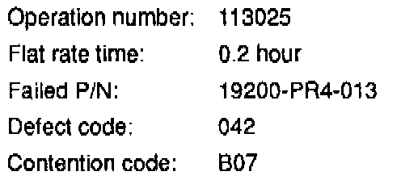

Water Pump - Humming/Whining/Squealing
September 21, 1993BULLETIN NO.
93-020
YEAR
1992-93
1991-93
MODEL
INTEGRA LEGEND
VIN APPLICATION
ALL
Noisy Water Pump
SYMPTOM
Legend:
A humming, whining noise is audible below 750 rpm. This noise is transmitted through the heater valve and can be heard from the driver's seat only with the coolant at normal operating temperature.
Integra:
A squealing noise is audible at idle with the coolant at normal operating temperature. This noise is often mistaken for a dry or faulty alternator bearing. Diagnose the symptom carefully.
PROBABLE CAUSE
Friction between the water pump seal and shaft.
CORRECTIVE ACTION
Add the water pump lubricant listed under PARTS INFORMATION to the radiator coolant.
1. Allow the radiator to cool.
2. Carefully remove the radiator cap; then, withdraw 200 cc (6.8 oz) of coolant from the radiator with a syringe.
3. Add the water pump lubricant to the radiator, and reinstall the radiator cap.
PARTS INFORMATION
Water Pump Lubricant
P/N 08798-9005

WARRANTY CLAIM INFORMATION
In warranty:
The normal warranty applies.
Out of warranty:
Any repair performed after warranty expiration may be eligible for goodwill consideration by the District Service Manager or your Zone Office. You must request consideration, and get a decision, before starting work.

Disclaimer